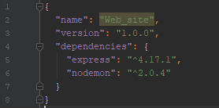
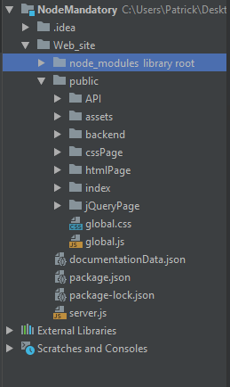
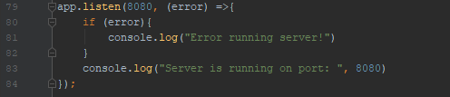

Det eneste der er lavet som backend til denne hjemmeside, er en JavaScript fil der hedder server.js.
Resten af filerne er frontend og lagt i en mappe der hedder public.
Udgangspunktet har været at lave en server ved hjælp af pakken "Express". Informationer om denne pakke er fundet via npmjs.com, og installeret med terminal kommandoen: npm i express
Alternativt kunne Express også været tilføjet manuelt i package.json filen under "dependencies" med versions nummer.
I server filen er der brugt "require" keywordet til at importere "Express", og en konstant som der er kaldt "app" er blevet oprettet til at instansiere Express
For at kunne køre serveren bruger vi Express's listen metode til at definere hvilken port der lyttes på
  